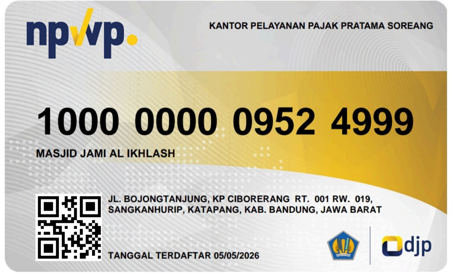
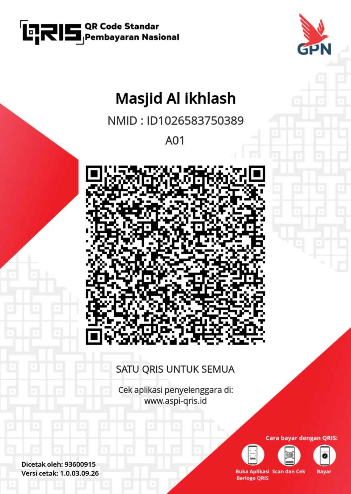

Infaq Operasional & Pembangunan Masjid Jami Al-Ikhlash
Rp 0
terkumpul dari target Rp 50.000.000
0 Donatur
Tidak Terbatas Hari
DKM
DKM Masjid Jami Al-Ikhlash
Pengelola Resmi • Terverifikasi

Mari bersama-sama mengambil bagian dalam investasi akhirat melalui infaq dan wakaf untuk Masjid Jami Al-Ikhlash.
Petunjuk Infaq / Wakaf Online:
- Silakan lakukan transfer ke rekening resmi masjid atau scan QRIS yang tertera di bawah.
- Setelah selesai melakukan transfer atau scan QRIS, tekan tombol hijau "Konfirmasi Infaq Anda Disini" di bagian bawah halaman ini.
- Isi formulir nominal dan nama, lalu tekan tombol "Kirim" untuk meneruskan konfirmasi ke WhatsApp pengurus.
REKENING RESMI MASJID
BSI : 733-500-5052
a.n MASJID AL IKHLASH
ATAU SCAN QRIS DI BAWAH:
